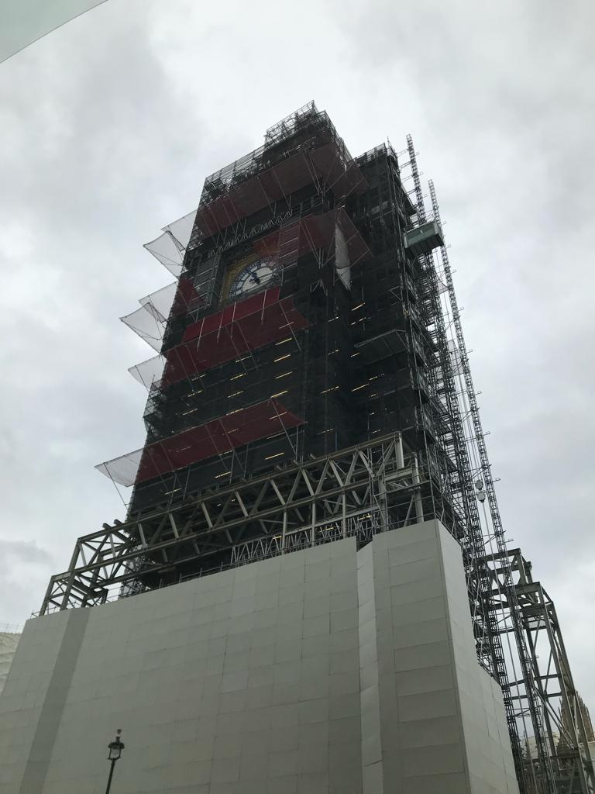
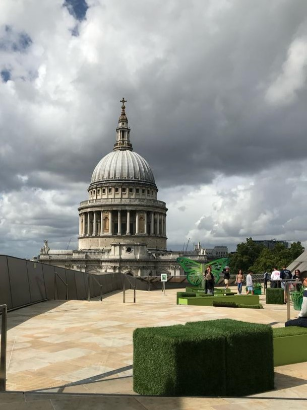

___Der Big Ben
Der "Big Ben" in London, offiziell bekannt als der Elizabeth Tower, ist eine der ikonischsten Sehenswürdigkeiten der Stadt.
Dieser majestätische Uhrenturm wurde im Jahr 1859 fertiggestellt und zählt zu den Meisterwerken der viktorianischen Architektur.
Er erhebt sich über dem Palace of Westminster und ist nicht nur ein herausragendes Beispiel für die britische Baukunst, sondern auch ein Symbol für die Pracht des Britischen Empire.
Der Uhrschlag des Big Ben ist weltweit bekannt und hat im Laufe der Jahre Generationen von Menschen fasziniert.
Dieses historische Wahrzeichen ist ein Muss für alle, die London besuchen, und verkörpert die reiche Geschichte und Kultur der Stadt.
Buckingham Palace:
Der Buckingham Palace in London ist eine beeindruckende Residenz, die seit 1837 als offizielle Residenz der britischen Monarchen dient.
Dieses prächtige Gebäude im neoklassizistischen Stil wurde von John Nash entworfen und ist ein architektonisches Juwel. Es ist auch das Zentrum vieler königlicher Zeremonien und Veranstaltungen.
Der Buckingham Palace ist ein Ort von historischer Bedeutung und beherbergt eine beeindruckende Kunstsammlung sowie prächtige Gärten. Das Wechseln der Wache, eine traditionsreiche Zeremonie vor dem Palast, zieht täglich Besucher an und ist ein Symbol der königlichen Pracht und Tradition.
Der Buckingham Palace ist ein Symbol für die britische Monarchie und ein unverzichtbares Ziel für jeden, der die reiche Geschichte und das königliche Erbe Londons erleben möchte.
___London Eye:
Das "London Eye" ist eines der markantesten Wahrzeichen von London und ein Meisterwerk der modernen Ingenieurskunst.
Diese riesige Riesenrad, auch als "Millennium Wheel" bekannt, wurde im Jahr 2000 anlässlich des Millenniums eröffnet.
Es bietet einen atemberaubenden Panoramablick auf die Stadt, insbesondere entlang der Themse und der historischen Sehenswürdigkeiten von London.
Das London Eye ist nicht nur ein beeindruckendes technisches Bauwerk, sondern auch ein Ort für unvergessliche Erlebnisse, sei es ein romantisches Rendevouz bei Sonnenuntergang oder eine spektakuläre Aussicht auf das Silvesterfeuerwerk.
Dieses Wahrzeichen hat sich zu einer der beliebtesten Touristenattraktionen in London entwickelt und zieht Besucher aus aller Welt an, die die Stadt aus luftiger Höhe bewundern möchten.

___St. Paul's Cathedral
Die St. Paul's Cathedral in London ist ein architektonisches Meisterwerk und ein Symbol für die britische Hauptstadt.
Dieser majestätische Sakralbau wurde im 17. Jahrhundert erbaut und ist für seine beeindruckende Kuppel bekannt, die die Skyline von London beherrscht.
Die Kathedrale wurde von Sir Christopher Wren entworfen und ist ein bemerkenswertes Beispiel des Barockstils.
Sie hat eine lange Geschichte, darunter wichtige königliche und nationale Ereignisse wie Hochzeiten und Staatsbegräbnisse.
Besucher können die atemberaubende Kuppel erklimmen und von dort aus einen spektakulären Blick auf die Stadt genießen.
Die St. Paul's Cathedral ist nicht nur ein Ort der Anbetung, sondern auch ein kulturelles Juwel und ein Wahrzeichen, das die Pracht Londons verkörpert.
Geheimtipp
___Fotomotiv
Um einen besonders schönen blick auf die St. Paul's Cathedral zu bekommen empfehle ich, gegenüber, auf das frei zugängliche Dach des Einkaufzentrum zu gehen.
Dort hat man nicht nur einen Tollen Blick auf die St. Paul's Cathedral, sondern auch ein tolles Fotomotiv mit dem St. Paul's Cathedral im Hintergrund und Grünen Schmetterlingsflügel, vor die man sich stellen kann.